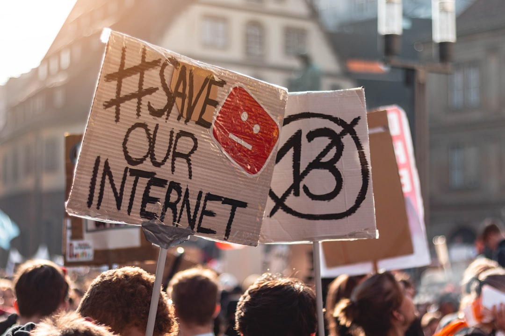

**Cryptocurrency: The Illusion of Freedom and the Reality of Control**
**Cryptocurrency: The Illusion of Freedom and the Reality of Control** The digital age promised liberation, a break from traditional financial systems shackled by the greedy machinations of banks and governments. Yet, as the shadows of capitalism loom larger than ever, cryptocurrency—the supposed harbinger of financial freedom—has become yet another tool wielded by the elite to consolidate power and control. Imagine a world where every worker can shake off the chains of oppressive banking fees and unjust interest rates. The idea of decentralized finance speaks to this dream. In theory, cryptocurrencies like Bitcoin and Ethereum are radical; they offer a peer-to-peer network where everyone is equal. But let’s pull back the curtain and reveal the harsh realities behind the glamorous facade. The dream of decentralized finance is fast becoming a nightmare of corporate domination. The truth is, cryptocurrency operates in a capitalist framework that ultimately serves the interests of those already in power. Large corporations are less interested in empowering the disenfranchised than they are in exploiting the hype. Big players in finance have obfuscated the supposed alternative that cryptocurrency represents. Instead of liberation, we see the birth of crypto oligarchs—a new breed of techno-capitalists who, rather than dismantling the system, are reinforcing it. The mantra of technological advancement is just a smoke screen for the continued extraction of wealth from the hands of the working class. Take, for instance, the breathless hype around Bitcoin. One could argue it initially represented a rebellion against established finance, a refusal to play by the rules of the traditional banking system. However, the reality has changed dramatically. Reports indicate that a significant percentage of Bitcoin is now owned by a tiny fraction of addresses. It’s not revolutionary; it’s simply the latest manifestation of wealth consolidation, with the same faces cropping up at the top. Cryptocurrency exchanges are largely unregulated and exploitative. Fees applied for buying, selling, or trading cryptocurrencies disproportionately impact the lower-income individuals they claim to liberate. The promise of easy access frequently leads to scams; recent statistics reveal that millions of dollars are lost each year due to deceptive schemes targeting the vulnerable. It’s not only the financial institutions and cryptocurrency exchanges reaping the benefits. The very infrastructure of cryptocurrencies relies on energy-intensive mining operations, contributing to the ongoing climate crisis. Here is a glaring contradiction: While the cryptocurrency world asserts it promotes a new economic paradigm, its operations leave a carbon footprint, ravaging our planet in the name of profit. Meanwhile, the working class suffocates under the pressures of rising living costs exacerbated by climate-related disasters. As cryptocurrencies have garnered attention, government regulators have begun to take notice, too—though not in the way one might hope. Instead of protecting consumers and promoting equitable access, governments are maneuvering to integrate cryptocurrencies into the existing system. This results in regulations that further entrench the power of existing financial institutions while stifling the potential of grassroots movements. In true capitalist form, governments serve the interests of the financial elite over the people they are meant to represent. The recent Inflation Reduction Act in the U.S., rather than addressing the dire economic needs of working families, offers tax breaks to wealthy corporations. Plans for Central Bank Digital Currencies (CBDCs) suggest a dangerous turn: a new format of money that may provide central banks with unprecedented control over individual spending habits and savings, ensuring their surveillance over our financial lifelines. So, what do we do? The answer isn’t to dismiss cryptocurrency altogether but to recognize that we need to reclaim finance itself—not through speculative investments and the false promise of riches, but through a commitment to a financial system that prioritizes people over profits. Let’s reframe the conversation! Cryptocurrency can be a tool for community-driven projects that serve the interests of the disenfranchised rather than corporate titans. Cryptocurrency must be repurposed as a means for mutual aid, for bolstering local economies, for dismantling oppressive systems rather than reinforcing them. The real revolution lies not in the prices of Bitcoin or Ethereum soaring towards the stratosphere, but in a collective awakening to the concept of solidarity and mutual support among everyday people. This is a chance to build systems that honor diverse forms of resilience, creativity, and cooperation outside of the parameters dictated by financial monopolies. The choice is clear: a future of wealth consolidation dominated by a
Updated 2025-08-04 22:40 UTC